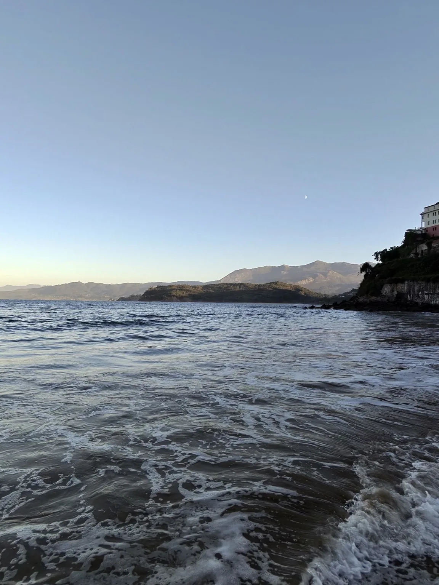

Ejemplo
Ejemplo
Lastres Apartamento
La Atalaya de Lastres
2 huéspedes1 dormitorio1 baño
Un refugio para dos, con luz de mañana y el Cantábrico al otro lado de la ventana.
Ver alojamientoMar al despertar. Un porche a la sombra. Espacio para estar juntos. Encuentra la casa que va contigo.
Lastres / Colunga / Caravia
El Cantábrico, siempre cerca.Colección de muestra: nombres, capacidades y equipamiento ilustrativos. Las fotografías son propias; las fichas aún no corresponden a alojamientos reales reservables.
Los filtros muestran zona y capacidad. La disponibilidad para tus fechas se consulta con Hernán.
Ejemplo
Lastres Apartamento
Un refugio para dos, con luz de mañana y el Cantábrico al otro lado de la ventana.
Ver alojamiento Ejemplo
Ejemplo
Colunga Casa con jardín
Piedra, madera y un porche para alargar la sobremesa. Una casa para disfrutar juntos.
Ver alojamiento Ejemplo
Ejemplo
Caravia Casa con terraza
Una terraza al aire libre y espacio para una escapada en familia o con amigos.
Ver alojamiento Ejemplo
Ejemplo
Colunga Casa rural
Una casa de carácter rural para quienes disfrutan de los pequeños detalles.
Ver alojamiento Ejemplo
Ejemplo
Lastres Casa familiar
Una propuesta para compartir días junto al mar, con espacios para reunirse y desconectar.
Ver alojamientoNo hay ejemplos que encajen con esa zona y número de personas.
Dinos cuándo vienes y cuántos sois.